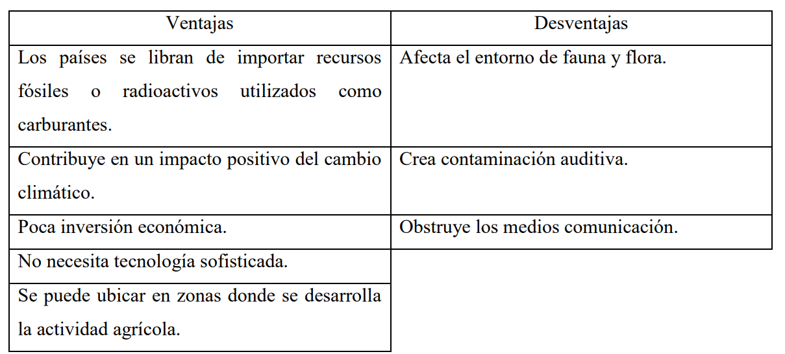
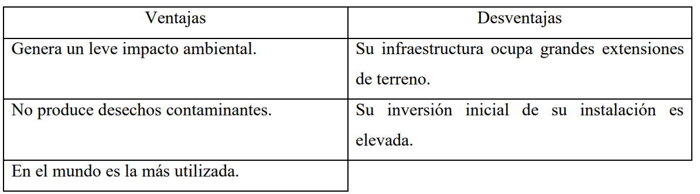
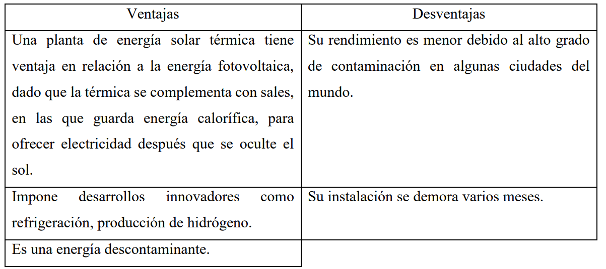
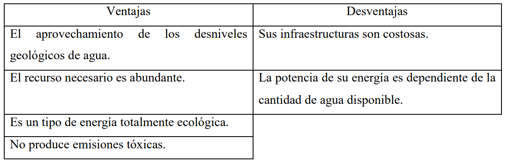
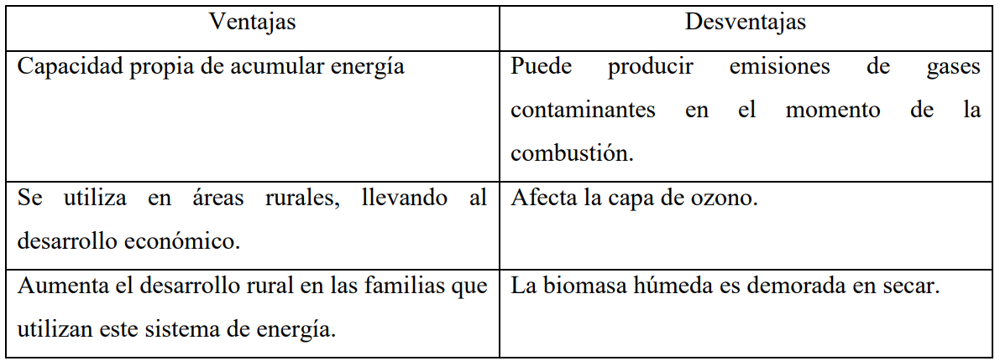
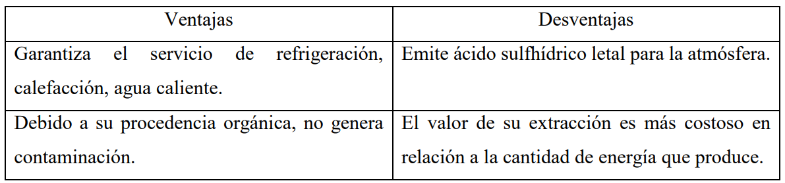

Introducción
Las Energías Renovables (ER) son consideradas energías puras, teniendo en cuenta que
provienen de los recursos que nos ofrece la naturaleza; aire, luz que emite el sol, tierra y acuíferos,
mitigando la contaminación ambiental por ser energías que se renuevan constantemente ya que su
esencia es ser inagotable. Estas energías se obtienen de modo sustentable y sostenible, acorde con eso se
crea un equilibrio en los ámbitos sociales, ambientales, económicos y políticos (Posso,
Acevedo y Hernández, 2014).
Como se menciona en el apartado anterior, la utilización de energías limpias, son un modelo
de progreso sostenible en el Comercio Internacional porque crea negocios con conciencia ecológica
y procesos productivos que perduran en el transcurso del tiempo, generando un ambiente de
equilibrio entre el consumo y el cuidado en la forma de obtener las riquezas naturales que nos
proporciona el ecosistema.
Dicho lo anterior se puede confirmar una relación directa entre el comercio sostenible y el
consumo sustentable en el cual se pueden saciar las necesidades actuales sin perjudicar el acceso
de energías eficientes de las próximas generaciones, evolucionando a una sinergia ecológica en el
futuro del Comercio Mundial. Resaltando las riquezas y ventajas que tienen algunos países en su
diversidad de recursos en comparación a otros, atrayendo la Inversión Extranjera Directa
(Edenhofer y Anselm Schultes, 2017).
Metodología
Para empezar el desarrollo de este artículo, se usó una metodología de revisión
bibliográfica tomando como referencia un margen de 30 artículos limitados al idioma español
teniendo en cuenta un límite de 9 años desde el periodo de publicación de cada artículo. Se hicieron
búsquedas en la biblioteca virtual de la Universidad Francisco de Paula de Santander, tomando
herramientas de consulta como Google Scholar, realizando un filtro por medio de conceptos claves
tales como: energías renovables, modelo sostenible, impacto ambiental, comercio internacional.
Seguido de eso se identificaron las principales bases de datos y páginas web para el
desarrollo de este ejercicio académico, donde se eligieron revistas científicas como: Redalyc,
Dialnet, SciELO y repositorios universitarios tanto nacionales como internacionales destacando la
Universidad Pontificia Bolivariana sede Medellín – Colombia, Universidad Católica de Colombia,
la Institución de educación universitaria en San Nicolás de los Garza – México, Pontificia
Universidad Católica del Perú, Universidad Complutense de Madrid – España.
Por último, se realizó una selección de 15 artículos bajo ciertos criterios que permitieron
una mayor profundización y conceptualización acerca del tema abordado en el presente escrito,
que ofrecen y garantizan al lector una comprensión clara.
Desarrollo
Las energías renovables han logrado un nivel de calidad significativo que contribuye a
reducir el impacto negativo ambiental sobre la tierra, buscando sustituir el empleo de las fuentes
de energías fósiles que serán mencionadas en seguida: gas natural, petróleo crudo y el carbón. De
igual manera en el artículo (Blanco, 2015). Señala que potencializar los recursos naturales que
posee cada país propicia un ambiente energético sostenible donde las naciones desarrollen altos
niveles de productividad con el uso de estas energías perdurables en el tiempo; contribuyendo a la
generación de ocupación laboral y avances tecnológicos.
Actualmente el interés hacia la implementación de este tipo de energías de uso infinito,
como se muestra en el artículo (Francés, 2012). Trabaja en pro de la conservación del ecosistema,
aportando a la disminución de gases de dióxido de carbono, aliviando el efecto invernadero, de
igual modo minimiza la acidificación y contaminación del agua, entre otros efectos nocivos; que
conlleva seguir utilizando estas técnicas de explotación de las energías convencionales.
Con respecto a la demanda de energía, cada día las personas van consumiendo mayor
cantidad para su diario vivir ya que la humanidad está en continuo crecimiento y por lo tanto las
industrias y la economía también, creando una alta dependencia hacia ella. El problema es que
algún día el petróleo y los demás combustibles fósiles al ser energías no renovables se acabarán,
he aquí donde estará la pujante necesidad de utilizar las energías renovables como método
sustentable y sostenible (Stuhldreher y Morales Olmos, 2020).
Cabe resaltar que se tiende a confundir la definición entre los términos Sustentabilidad y
Sostenibilidad. De acuerdo con la Organización de Naciones Unidas (Ávila, 2018) la disimilitud
que se presenta entre desarrollo sustentable y el desarrollo sostenible, es que el desarrollo
sustentable es aquel sistema que tiene como fin la protección, preservación y conservación solo de
las Riquezas Naturales para el provecho de la actual y futura población sin considerar las
prioridades políticas, culturales ni sociales del individuo, en cuanto al desarrollo sostenible es el
sistema por medio del cual cubre las carencias de multiculturalidad, colectivas, monetarias, y de
un ambiente saludable de la generación presente, sin comprometer el cumplimiento de las mismas
a las próximas generaciones.
En comercio internacional, el intercambio de recursos entre países ya no será el mismo,
ahora se analizará cómo los países realizaran inversión extranjera directa (IED) con sus países aliados,
creando un enlace de economía colaborativa para generar sostenibilidad en las
comunidades más cercanas a estos proyectos, promoviendo un turismo sustentable y formando
industrias amigables con el medio ambiente.
Teniendo en cuenta que las razones principales para optar por el cambio de uso de las
energías infinitas, según el artículo (Lucchini, 2020) es la protección ambiental en el mundo y la
escasez de recursos naturales no renovables en un futuro, lo cierto es que estos recursos cada vez
tendrán costos más altos y los países en vía de desarrollo sin una ventaja competitiva sobre estos
recursos no tendrán cómo pagarlos, lo que nos ayuda a entender que los países dejarán de ser
dependientes energéticamente de otros y optar por la implementación de energías renovables
eficientes, ya que en todos los continentes sale el sol, existe el aire y el agua.
Se sabe que contar con una infraestructura adecuada para la creación de los paneles solares,
las hélices, las turbinas hidráulicas y demás, son de alto costo, pero en un futuro no será comparable
con el coste del petróleo, el carbón y el gas, los cuales tendrán un precio elevado donde las energías
renovables serán la opción más viable para la existencia y sobrevivencia humana.
En el comercio internacional se busca que los negocios se pacten verificando que se utilicen
las energías renovables, ya que con ello se da la posibilidad de contribuir a un avance sostenible y
también a la realización de proyectos, como por ejemplo los automóviles con combustible
alternativo y edificios con rendimiento energético, vehículos eléctricos, tecnologías eléctricas
basadas en renovables, combustibles biológicos destinados al transporte. Lo que indica que estas
energías se pueden adaptar perfectamente a cualquier tipo de industria. (Ministerio de Energía,
Minas y Energía, 2016).
Además, en el entorno mundial del comercio internacional, los países que utilizan estas
energías limpias generan; empleos dignos, incrementan los ingresos de la población, mejoran su
calidad de vida; restableciendo otros aspectos determinantes para el desarrollo de un país como la
salud y la educación como lo expresa la (CEPAL, 2018). Por lo tanto, los países más desarrollados
incentivan a los países subdesarrollados a mejorar sus prácticas de producción con estándares más
sostenibles para poder entrar en sus mercados.
Actualmente en Colombia según las publicaciones de la Unidad de Planeación Minero
Energética (UPME, 2020) se tiene un registro de emprendimientos de energías renovables con una
cifra de 354 proyectos, que se encuentran divididos en ER solar fotovoltaica con un total de 331,
particularmente se menciona uno de los más relevantes en Santander. En tanto a la energía eólica
se obtiene una sumatoria de 19; donde su foco principal se encuentra en la Guajira, posteriormente
Atlántico, Boyacá y Bolívar, finalmente la energía de biomasa tiene una totalidad de 4. Resaltando
que estos proyectos son de baja capacidad de 2W, pero pueden alcanzar los 11.863,34 MW.
Con ejemplos como los mencionados anteriormente se ratifica que Colombia ha mirado
hacia un horizonte de sostenibilidad al invertir en este sector energético, creando una sinergia de
economía colaborativa con entidades como Bancoldex,, Corporación Ambiental Empresarial,
Colombia Productiva ,Consejo Colombiano de Eficiencia Energética; propiciando espacios de
inversión extranjera con entidades internacionales como Carbón Trust de Reino Unido, aportando
no solo recursos sino también asistencia técnica. Las empresas que aprovecharon estos proyectos
lograron reducir sus costos de producción en un 3% consiguiendo ser más competitivas en sus
productos y servicios en cuanto a otras empresas que no utilizan estas ER, aumentando su margen
de rentabilidad y obteniendo una seguridad de abastecimiento de energía en sus plantas. Según
(Portafolio, 2021).
A continuación, examinaremos brevemente los tipos de energías no convencionales en las
que se clasifica la energía renovable dependiendo del recurso natural que aprovechan para su
obtención, seguido de eso revisaremos las ventajas y desventajas de las mismas.
Energía eólica: Es aquella energía que se origina por medio del viento que compone la
atmósfera. Para obtener energía eléctrica a partir de la eólica, se requiere una turbina la cual
funciona con un sistema de energía cinética que fue inspirada en los molinos tradicionales de aire
en la antigüedad, el cual en su eje tiene un generador eléctrico que se activa mediante la fuerza que
ejerce el aire sobre sus aspas, conectadas a un rotor que multiplica la velocidad de rotación del
generador logrando producir energía eléctrica la cual se direcciona a una red que conlleva a un
transformador para ser distribuida a los usuarios ( IRENA - International Renewable Energy
Agency , s.f.).
Una de sus principales características es ser una energía de las más limpias utilizadas en el
planeta seguida de la energía solar fotovoltaica.

Fuente: Correa-Rivera Mery & Peñaloza-Gonzalez Yeimy
Energía solar: Es una energía que viene directamente del sol aun cuando el clima está
nublado, es una de las tecnologías con mayor crecimiento en el sector de energías no
convencionales, de igual manera ofrece acceso a la electricidad a poblaciones que se encuentran
ubicadas en zonas alejadas de las líneas de transmisión de energía. Además, cuenta con una vida
útil de alrededor de 30 años (Rincón y Camargo., 2018).
Se puede obtener este tipo de energía de dos formas diferentes:
Energía Solar Fotovoltaica: Esta energía se crea utilizando paneles solares que tienen la
función de absorber directamente la luz y el calor proveniente del sol, dichos paneles están
compuestos por fotocélulas que convierten esta energía solar a energía eléctrica. Conforme lo dice
el artículo; Experiencias de la cooperación internacional en el desarrollo de las energías renovables
en América Latina (Rivera y Fausto Rene, 2011) toda esa energía en forma de corriente directa es
conducida a un inversor que la convierte en corriente alterna de bajo voltaje, luego de eso, la energía
llega a una subestación eléctrica que incrementa su voltaje, para su posterior uso doméstico e
industrial.

Fuente: Correa-Rivera Mery & Peñaloza-Gonzalez Yeimy
Energía Solar Térmica: También llamada energía solar concentrada (CSP) está compuesta
por espejos que sirven para atraer la luz solar. Esos rayos provocan en el agua altas temperaturas
creando vaporización que estimula un motor produciendo electricidad a gran escala. La función de
estos espejos es direccionar los rayos hacia un foco puesto en la parte alta y delgada de la torre.
Los componentes de un campo en donde se puede producir la energía solar térmica son el
concentrador solar y el generador de electricidad. Además, como se menciona en (CELSIA, s.f.).
La energía solar térmica, puede usarse en distintas actividades, como, por ejemplo: producción de
agua tibia de uso doméstico e industrial (lavado de botellas, piezas de coches), deshidratadores de
vegetales, frutas, flores, Sistemas de calefacción (invernaderos, corrales de crianza de aves y
cerdos) por último y no menos importante climatización de piscinas y destilación del mar.

Fuente: Correa-Rivera Mery & Peñaloza-Gonzalez Yeimy
Energía hidráulica o hidroeléctrica: Este tipo de energía se obtiene de las vertientes de
agua en movimiento que son controladas en la compuerta de una represa. Como lo afirma la
(Fundación Aquea, s.f.). De acuerdo con la altura y la velocidad en la que cae la corriente de agua,
puede ser modulada la cantidad de energía que produce, en el momento en el que el agua baja,
recae sobre unas aspas que están conectadas a una turbina que las hace girar por la fuerza con la
que llega. Dichas turbinas están enlazadas a un alternador eléctrico que finalmente provoca
electricidad, que es conducida a un transformador y así dirigirla a una torre eléctrica de alta tensión
y ser distribuida para su posterior consumo.

Fuente: Correa-Rivera Mery & Peñaloza-Gonzalez Yeimy
Biomasa y biogás: Es la energía extraída a partir de la materia orgánica, según (Ministerio
de Energía Minas y Energía, 2016) son los desechos de madera, plantas y materiales animales. La
biomasa es la quema de residuos orgánicos como conchas de frutas y verduras, retal de madera,
residuos de caña de azúcar, restos de olivo, entre otros; disminuyendo las transmisiones de CO2.
Esta energía es la que más aumento tiene en el planeta debido a que produce energía eléctrica,
biocombustible, térmica y biogás.
A continuación, se nombrarán algunos de los principales usos, de acuerdo al artículo
Historia y Uso de Energías Renovables (Oviedo, Badii, Guillen, y Serrato, 2015).
Uso Doméstico: En hogares rurales se utiliza leña para la cocción de alimentos, un
biodigestor procesa residuos orgánicos para obtener biogás.
Uso Industrial: Proporcionar calor para secar productos en la actividad agrícola como:
cacao, la fabricación de ladrillos y cal. Aprovechamiento del calor en empresas y el biocombustible
en automóviles, biogás y por último electricidad.

Fuente: Correa-Rivera Mery & Peñaloza-Gonzalez Yeimy
Energía geotérmica: Según el Banco Interamericano de Desarrollo (Brun, 2014) Es la
que procede de las altas temperaturas contenidas en el orbe, se usa para referirse a las
manifestaciones térmicas dentro del suelo, como: aguas termales, erupciones volcánicas y géiseres;
produciendo vapores y gases a altas temperaturas.
Es una energía perdurable e independiente de las condiciones climáticas del año, es una
energía constante en el tiempo, porque el calor dentro de la superficie es ilimitado. Es una energía
que se encuentra en cualquier parte del mundo, no obstante, no es viable en algunos lugares del
mundo por cuestiones geográficas.

Fuente: Correa-Rivera Mery & Peñaloza-Gonzalez Yeimy
Resultados
Uso eficiente de la energía a escala mundial.
A partir de los datos obtenidos de la revisión minuciosa de diversas fuentes bibliográficas,
se pudo constatar que el uso adecuado y eficiente de las energías, juega un papel primordial en la
conservación del medio ambiente, y en la implementación de alternativas eco sustentables para el
consumo comercial internacional, en donde posibilita reducir el impacto negativo del clima, así como
incentiva a la generación de nuevos mercados comerciales y el incremento de intercambio
comercial, entre aquellos que empleen, impulsen y generen este tipo de estrategias.
Estudios como los llevados a cabo por (Oviedo, Badii, Guillen y Serrato, 2015) señalan que
los países industriales solo emplean del total de la energía renovable disponible, la tercera parte de
la misma, para el uso del sector. Por su parte, (Badii, M. H., Guillen, A. y Abreu, J., 2016)
permitieron observar que coexisten disimilitudes significativas en el dispendio por persona en
regiones con niveles casi iguales en sus modelos de vida, para el caso de Estados Unidos este se
encuentra por encima de Suiza en cuanto al consumo per cápita de energía, esto producto a que
USA, emplea diferentes mecanismos de participación, consumo y preservación de la energía, que
en otros países en donde su uso, es más consciente y está dirigido a modelos de bienestar y calidad
de vida, más allá de la industrialización.
Contexto internacional de las energías renovables.
Actualmente a nivel mundial, se está generando un cambio de políticas de consumo y de
producción guiadas al desarrollo, transformación e implementación de las energías renovables,
producto de la favorable relación de costo- competencia que estas presentan, lo que ha llevado a
que las grandes multinacionales modifiquen sus modelos de negocios y los adapten a las
necesidades de crecimiento y expansión de ER, como mecanismo de crecimiento comercial,
dejando en el pasado la inversión exclusiva en los hidrocarburos y todos sus derivados. (Algarín y
Álvarez, 2018)
Este crecimiento exponencial de las ER, se puede visibilizar en el trabajo realizado por
(André, De Castro y Cerdá., 2012), en donde se determinan la situación de las energías alternativas
en distintos países, para el caso de Estados Unidos, este solo emplea el 15% distribuido en el uso
de biomasa, hidroeléctrica y la energía eólica; para el caso de China el uso de este tipo de energías
sostenibles corresponde al 60% en donde el uso de este tipo de energías corresponde a la biomasa
e hidroeléctricas; para el caso de India el uso de estas energías corresponden al 75% en donde todo
el sistema eléctrico se encuentra en el uso y aprovechamiento de la energía eólica; en cuanto a
Nueva Zelanda este utiliza del total de su energía el 73% energías provenientes de la geotérmicas
y las hidroeléctricas. En sentidos paralelos, (Algarín, y Álvarez, 2018) Visibiliza que
Latinoamérica se posiciona como una de las regiones de mayor crecimiento exponencial en cuanto
ER se refiere, en la medida en que están en constante transformación, innovación, desarrollo de tecnologías
basadas en la ER, lo cual hace que estos territorios se perfilan económicamente, como
una de las regiones más sostenibles para la activación del intercambio comercial de tecnologías
que suplan con las necesidades actuales en cuanto a la generación y distribución de energía, lo que
conlleve a su crecimiento económico y comercial. Asimismo, (Gasca, 2013) Señala que México
ocupa el cuarto lugar a nivel mundial en aprovechamiento de la energía geotérmica como fuente
energética, asimismo el uso de la energía eólica ha logrado un crecimiento muy favorable en las
últimas décadas, aunque este sigue siendo reducido.
Es de esta manera se puede visibilizar el camino, la implementación y el desarrollo de las
posturas sostenibles que los distintos países están implementando a fin realizar un uso eficiente de
los recursos naturales como medio de sostenimiento energético y crecimiento económico de las
naciones.
Implementación de tecnologías a partir del uso de energías renovables en el mercado
comercial.
Nuevas tecnologías se han desarrollado para la utilización de energías alternativas, para el
caso de la energía eólica, se ha diseñado espejos parabólicos, máquinas, celdas energéticas y
vehículos híbridos, entre otros, para la energía solar se ha implementado calentadores de aire y
agua y finalmente para la energía de biomasa, la conversión geotérmica y las celdas fotovoltaicas.
(Badii, M. H., Guillen, A. y Abreu, J., 2016) En México se han desarrollado diferentes tecnologías
que buscan el aprovechamiento de mecanismos que satisfagan las necesidades humanas a partir de
la utilización de ER, como es el caso de las tecnologías fotovoltaicas, en donde se han llevado a
cabo el desarrollo de celdas energéticas, y sistemas fotovoltaicos integrados a la red eléctrica;
asimismo se han desarrollado tecnologías para la construcción de calentadores solares Agua, en
donde se han diseñado los colectores solares para disminuir o elevar la temperatura en espacios
específicos de uso doméstico, como los conocidos sistemas de calefacción, la climatización de
piscinas, espejos de vapor, entre otros . De igual forma se han incorporado tecnologías termo
solares para la generación de electricidad basadas en sistemas ópticos de concentración solar, en
donde sobresalen cilindros parabólicos, centrales termo solares, tecnología Fresnel termo solar y
sistema de almacenamiento central, los cuales estos últimos se han convertido en una innovación
de gran acogida internacional, en donde ha aumentado el crecimiento económico del país a partir
de la comercialización de estos dispositivos tecnológicos sostenibles (Gasca, 2013).
Oportunidades de negocio a partir de energías renovables en Colombia.
Colombia cuenta con una gran diversidad de recursos renovables, lo cual brinda grandes
posibilidades de expansión y desarrollo en generación de energía a partir de estos recursos, como
medio de sostenimiento energético y crecimiento económico de la región, asimismo, con la
implementación de ER, posibilita la preservación del medio ambiente y un incremento exponencial
de la economía (Cortés y Londoño., 2017) Hoy día, Colombia presenta grandes posibilidades de
innovación en tecnologías renovables, que la posiciona y la perfila como uno de los países que
logrará ser reconocidos a nivel mundial, en materia de generación de ER, puesto que actualmente
se están desarrollando proyectos dentro del territorio en el ámbito de diseño, desarrollo y
transformación de las energías, por diversas empresas del sector para la producción de tecnologías
sostenibles y amigables con el medio ambiente. (Rincón y Camargo., 2018)
Por lo cual, Colombia actualmente presenta una perspectiva favorable en cuanto el uso,
generación e implementación de ER, así como la apertura de nuevos espacios comerciales en los
distintos sectores económicos, en donde se establecen nuevos nichos de mercado de competitividad
y desarrollo económico (Giraldo, Ramírez, y Quintanilla., 2018) Por ejemplo, el sector de la
industria, la producción y uso de los agro combustibles a base de mazorca, ñame, zahina, betarraga
o cualquier otro tipo de biomasa de azúcar (Motta, Aguilar y Aguirre, 2012).
Asimismo, a partir de las energías renovables se están desarrollando diversos
productos en los distintos sectores de producción tales como el de energía, ganadería y agro,
coincidiendo en el área económica, medioambiental y social, correlacionándose entre sí, para
ofrecer alternativas con un potencial significativo para los países que los adopten; de esta forma,
dejan de ser requisitos normativos, para convertirse en gestiones rentables, con márgenes de
ganancia para las organizaciones que se deciden a generar una producción verde. (Gerena, Ruiz y
Horta, 2020)
Finalmente, cabe destacar que dentro del territorio colombiano se encuentran instauradas
distintas compañías internacionales, dedicadas a la generación de tecnologías a partir del desarrollo
ER, como es el caso de ABB, Isagen, termoeléctrica Termo Barranquilla S.A. entre otras, las
cuales, dentro del territorio nacional incentivan y desarrollan a partir de la de energía eólica, solar,
hidroeléctrica y biomasa , tecnologías de expansión comercial y el sostenimiento del consumo
eléctrico de la región.
Discusión
En los últimos años las energías no tradicionales se han convertido en una apuesta sostenible
y sustentable para la humanidad, en donde no solo se busca generar un equilibrio ambiental, sino
a su vez, la comercialización de nuevos productos en nichos de mercado poco explorados, que
conlleven a un desarrollo económico y el sostenimiento de la economía internacional.
La concentración de energía producida por el planeta corresponde al 100% proveniente de
fuentes naturales, en donde se destina solo un 1% a la producción de energía comercial, producto
de la explotación de las riquezas naturales, en donde dicha actividad, desestabiliza los ecosistemas
y contamina el medio ambiente a escala global, es por ello que desde una postura un poco más
sostenible se apunta al mejoramiento de la eficiencia energética, ya que este, se establece como
una de las formas más competitivas y asequibles donde coexiste un interesante balance de costobeneficio,
desde una perspectiva monetaria y que desde una visión ambientalista proporciona
garantías de sostenibilidad y preservación de los ecosistemas a nivel mundial. (Badii, M. H.,
Guillen, A. y Abreu, J., 2016)en donde se hace necesario aprender a utilizar de forma adecuada,
eficaz y eficiente los recursos renovables, constituirán en primera medida a la optimización de los
recursos, el sostenimiento económico de los países, la expansión de los mercados internacionales
y el mejoramiento de las condiciones de vida (Oviedo, Badii , Guillen y Serrato, 2015)Hoy por hoy
el orbe presenta mayor comprensión del impacto ambiental, monetario, comercial y energético,
que representa el uso y desarrollo de las ER. (Algarín y Álvarez, 2018) Aunque en su
implementación, estas no hayan tenido aún, una demanda de producción a escala global, producto
de las grandes limitantes, que los países presentan para su desarrollo, tales como inversión, oferta
y demanda comercial de carácter nacional e internacional en el sector energético, no por ello deja
de ser una alternativa sustentable y rentable para el crecimiento y el desarrollo económico de las
naciones (Badii, M. H., Guillen, A. y Abreu, J., 2016). Por ello se hace imprescindible aumentar
los incentivos, mejorar las condiciones y posibilitar los espacios de investigación, innovación,
reproducción y comercialización, de tecnologías eco sustentables y todos sus productos de valor
desagregado, en cada uno de los territorios con gran favorabilidad para el desarrollo y producción
de las ER, permitiendo de esta manera optimizar los recursos naturales, incrementar el comercio
internacional, y desarrollar estrategias comerciales fructíferas al largo plazo a escala mundial.
(Gasca, 2013) En donde cada país tenga la posibilidad a partir de disposición de recursos renovables dentro
de sus territorios, el financiamiento público y privado para implementación de
ER como medio energético sostenible, impulsando de esta manera el desarrollo de tecnologías
sustentables que den apertura a nuevos nichos de mercado que incentiven la oferta y la demanda
del intercambio comercial entre países, posibilitando de una u otra forma una apertura económica
sostenible, basada en la expansión de negocios y el desarrollo de una estabilidad económica de las
naciones en cuanto a la generación y permanencia de empleos formales a partir de la
implementación de las ER o la importación energética de la misma, a aquellos países que se
encuentren en condiciones desfavorables para su generación, producto de la carencia de
recursos, el desarrollo de tecnologías, déficit de inversión, entre otras; lo que aumentaría de forma
notable y eficiente la balanza de pagos y el PIB de cada país que incluya, desarrolle, impulse y
genere la implementación de las ER como medio de desarrollo sostenible y sustentable, lo que
traduce en un crecimiento económico, a partir de incremento de demanda de intercambio de bienes
y servicios entre países y posiciona el comercio internacional en una posición favorable,
convirtiéndose en una estrategia sostenible en el ámbito comercial y económico.
En cuanto al contexto nacional, Colombia es un país rico en recursos naturales, esto
producto de su ubicación geográfica y las características particulares en su relieve terrestre, lo cual
permite generar a mediano plazo, un gran impacto en cuanto al desarrollo de energía sostenible y
sustentable. (Algarín y Álvarez, 2018) lo que lo posiciona en lugar privilegiado en comparación de
otros países con limitación de recurso naturales, permitiendo diversificar y aumentar su oferta
energética siendo esta una ventaja competitiva (Motta, Aguilar y Aguirre, 2012) Colombia se
encuentra en una etapa de transición hacia la inclusión en el mercado de energía mayorista de
fuentes de energía no convencionales (Ferreira, 2011) Por ello dentro del territorio se puede llevar
a cabo el desarrollo e implementación de tecnologías a partir de energías renovables, ya que desde
hace años, hace parte de la energía generada en el país producto del aprovechamiento y utilización
de la energía hidroeléctrica, proveniente de las cuencas hídricas que hay en toda la región, así como
la implementación de otras energías. Es por ello que la región no solo implementa este tipo de
energía, sino que, a su vez, energías de tipo eólica, solar y de biomasa, que posibilita la expansión
de productos en el mercado internacional (Giraldo, Ramírez y Quintanilla., 2018) Las energías
renovables en el territorio nacional, se perfilan como estrategias alternativas para la
implementación de tecnologías que permitan la creación de mercados sostenibles y genere un intercambio
comercial a escala mundial, para la creación de bienes, y servicios ecológicos que
incentiven el aprovechamiento de las energías renovables en la cotidianidad del ser humano, que
proporcione calidad de vida, la sostenibilidad ambiental y social y el desarrollo económico a partir
del intercambio de bienes y servicios, que incremente el fijo en la balanza de pagos y en el PIB
del país, con miras de un desarrollo energético en todo el territorio nacional, así como de un
posicionamiento comercial a nivel internacional.
Conclusiones
Las energías renovables representan actualmente una apuesta económica sostenible, para el
intercambio comercial internacional, el establecimiento de nuevos nichos de mercado, y el
posicionamiento de estrategias comerciales de impacto entre países.
Actualmente Latinoamérica se posiciona favorablemente como una región fructífera en la
emisión, generación y desarrollo de tecnologías eco sostenibles a nivel mundial, el cual cada día
amplía su oferta y su demanda en la producción de bienes y servicios alternativos, que buscan
reducir el impacto nocivo en los ecosistemas, así como satisfacer necesidades básicas de los
consumidores, contribuyendo de esta manera al establecimiento y consolidación del comercio
internacional.
Colombia presenta un panorama próspero, en el uso, desarrollo, innovación e
implementación de las energías renovables como medio de conservación de sus recursos naturales,
así como estrategia de crecimiento y desarrollo económico, en donde se busca principalmente
optimizar su ventaja comparativa, en la competencia global de demanda.
Se hace necesario movilizar recursos públicos y privados, destinados a la investigación,
desarrollo e implementación de tecnologías renovables, que contribuyan con el establecimiento de
mercados competitivos a nivel nacional e internacional, que generen un aumento sustancial en el
PIB y en el equilibrio en la balanza de pagos de cada uno de los países que implementen las ER.
Referencias
- Algarín, & Álvarez. (2018). Un panorama de las energías renovables en el Mundo, Latinoamérica
y Colombia. Espacios, 39, 10.
- André, De Castro y Cerdá. (2012). Las energías renovables en el ámbito internacional. Cuadernos
económicos de ICE, 83, 11-36.
- Ávila, P. Z. (2018). LA SUSTENTABILIDAD O SOSTENIBILIDAD: UN CONCEPTO
PODEROSO PARA LA HUMANIDAD. Revista de Humanidades, Tabula Rasa.
- Badii, M. H., Guillen, A. y Abreu, J. (2016). Energías Renovables y Conservación de Energía
(Renewable Energies and Energy Conservation). Daena: International Journal of Good
Conscience, 11(1), 141-155.
- Blanco, M. J. (2015). LAS ENERGÍAS RENOVABLES: ¿ES POSIBLE HABLAR DE UN
DERECHO ENERGÉTICO? Elementos para una discusión. Jurídicas CUC.
- Brun, S. (2014). La Energía Geotérmica, Una nueva serie sobre la innovación de energía.
Obtenido de https://publications.iadb.org/publications/spanish/document/Geotermia-Unafuente-sostenible-de-energ%C3%ADa.pdf
- CELSIA. (s.f.). Obtenido de https://eficienciaenergetica.celsia.com/todo-lo-que-debes-saber-sobreenergia-solar-en-colombia/
- CEPAL. (2018). Observatorio Regional sobre Energías Sostenibles. Obtenido de
https://www.cepal.org/es/noticias/cepal-lanzo-observatorio-regional-energias-sostenibles
- Cortés, y Londoño. (2017). Energías renovables en Colombia: una aproximación desde la
economía. Revista Ciencias Estratégicas, 25(38), 375-390.
- Edenhofer, O. y Anselm Schultes. (2017). Política energética para un desarrollo sustentable.
Integración & comercio.
- Ferreira. (2011). La contribución de las energías renovables al bienestar. Una lección todavía
no
aprendida. Revista Galega de Economía, 20, 1-16.
- Francés, G. E. (2012). DESARROLLO ENERGÉTICO SOSTENIBLE Y ENERGÍAS
RENOVABLES. ICE, Revista de Economía.
- Fundación Aquae. (s.f.). Obtenido de https://www.fundacionaquae.org/que-es-la-energiahidraulica/amp/?gclid=Cj0KCQjwse-DBhC7ARIsAI8YcWJhv0ZWkstJ5bqjKJEc5UXBpbZbKGC_x8Rczl7RMBPVNFaqLOG7qWYaAqr1EALw_wcB#
- Gasca. (2013). Transición energética, energías renovables y energía solar de potencia. Revista
Mexicana de Física, 59(2)., 75-84.
- Gerena, Ruiz y Horta. (2020). Energías Renovables y su relación con los Sistemas de Gestión
Ambiental (Doctoral disertación, Cali: Universidad Santiago de Cali.
- Giraldo, Ramírez y Quintanilla. (2018). Las energías alternativas ¿una oportunidad para
Colombia?
Punto de vista, 9(13)., 5.
- Lucchini, H. C. (2020). Generación distribuida con energías renovables en Perú.
- Ministerio de Energía, Minas y Energía. (2016). Obtenido de
https://www.minminas.gov.co/foros?idForo=23754714&idLbl=Listado+de+Foros+de+Abril+De+2016
- Ministerio de Energía, Minas y Energía. (2016). Obtenido de
https://www.minenergia.gov.co/libro-transicion-energetica
- Motta, Aguilar y Aguirre. (2012). Una revisión a la reglamentación e incentivos de las energías
renovables en Colombia. Revista de la Facultad de Ciencias Económicas: Investigación y
Reflexión, 20(2), 55-67.
- Oviedo, J., Badii, M., Guillen, A. y Serrato, L. (2015). Historia y uso de energías renovables.
Daena: International Journal of Good Conscience., 8-9.
- Portafolio. (09 de marzo de 2021). Empresas han ahorrado $1.300 millones por energías limpias.
Obtenido de https://www.portafolio.co/economia/empresas-han-ahorrado-1-300-millonespor-energias-limpias-549890
- Posso, F., Acevedo, J., y Hernández, J. (2014). EL IMPACTO ECONÓMICO DE LAS
ENERGÍAS RENOVABLES. Revista de investigación en administración e ingeniería.
Vol.2, Núm. 2.
- Rincón y Camargo. (2018). Energías renovables un futuro óptimo para Colombia
- Rivera, P., y Fausto Rene. (2011). Experiencias de la cooperación internacional en el
desarrollo
de las energías renovables en América Latina. Aldea Mundo. Obtenido de
https://www.redalyc.org/comocitar.oa?id=54331040006
- S., R. M., y Camargo, A. K. (2018). Energías renovables un futuro óptimo para Colombia. 7.
- SER, C. (12 de marzo de 2021). Los 37 proyectos de energías renovables que se inaugurarán en
Colombia este año. Obtenido de https://ser-colombia.org/2021/noticias-del-sector/energiaestrategica-exclusivo-los-37-proyectos-de-energias-renovables-que-se-inauguraran-encolombia-este-ano/
- Stuhldreher, A. M., y Morales Olmos, V. (2020). ENERGÍA Y CAMBIO CLIMÁTICO EN EL
MERCOSUR: DESAFÍOS DE LA ARTICULACIÓN DE POLÍTICAS DE
DESARROLLO SOSTENIBLE. Análisis Político.
- UPME. (23 de abril de 2020). Se registran más de 350 proyectos de energías renovables no
convencionales vigentes. Obtenido de https://www.energiaestrategica.com/la-upmeregistra-mas-de-350-proyectos-de-energias-renovables-no-convencionales-vigentes-enabril/

 Profesional en Ecnomía,
c.mendez@unisimonbolivar.edu.co,
Universidad Simón Bolívar, Colombia..
Profesional en Ecnomía,
c.mendez@unisimonbolivar.edu.co,
Universidad Simón Bolívar, Colombia..